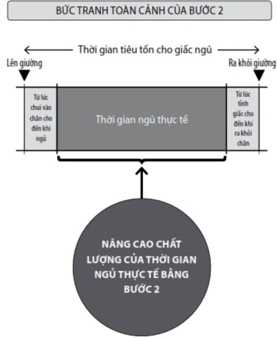

Tại Bước 2, chúng ta sẽ nâng cao "chất lượng thời gian ngủ thực tế". Để một cơ thể từ trước đến nay chẳng thể nào khỏe khoắn nếu không ngủ đủ khoảng 7 tiếng có thể được thỏa mãn chỉ với giấc ngủ trong 5 tiếng, cần phải nâng cao "khả năng phục hồi" có được trong quãng thời gian ngủ thực tế.
Bằng cách đó, cho dù chỉ với thời gian ngủ ít ỏi, chắc chắn bạn vẫn có thể thức giấc trong tỉnh táo và sảng khoái.
Nội dung được giới thiệu tại đây không phải là những lý luận khó hiểu, càng không phải là những hoạt động khiến bạn cảm thấy khó khăn khi thực hiện.
Hãy lựa chọn thật cẩn thận những thứ mang lại một giấc ngủ với chất lượng cao và có thể ngay lập tức phát huy hiệu quả khi sử dụng.
